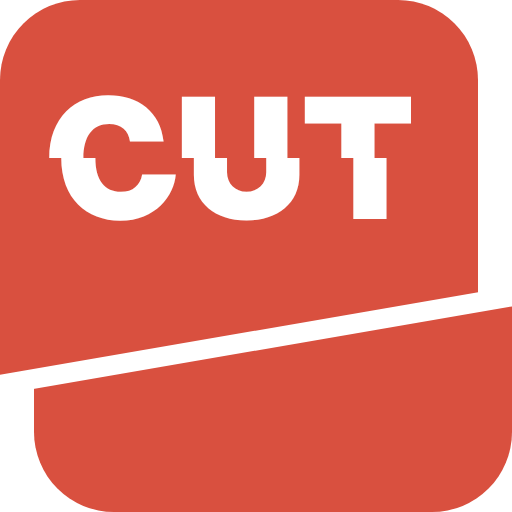

cut.arapshow.net북마크하거나 지인에게 공유할 때 주소가 너무 길어서 짜증나고, 어디를 잘라야 할지 어렵죠?
한글 주소가 %로 깨져 보여서 황당할 때 있죠? CUT 만드는 김에 이것도 같이 해결했어요.
주소 뒤에 붙은 긴 파라미터 어쩌고, 인코딩이 어쩌고 설명은 머리 아프니 그냥 생략할게요.
복사하기도 귀찮아, 긴 주소 넣자마자 바로 복사됩니다. 자동 복사가 안 될 때만 복사 버튼이 나와요.
이런 스트레스로 어랍쇼가 만들어 버린 CUT.arapshow.net 필요하면 맘껏 쓰세요. 랍쇼의 다른 유용한 툴은 TOOLS로